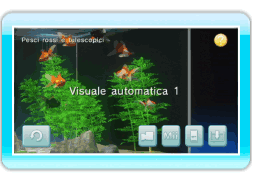

13 |
Visuale |
 |
|
Punta il telecomando Wii verso
 per cambiare la visuale e vedere l’acquario da un’angolatura diversa. per cambiare la visuale e vedere l’acquario da un’angolatura diversa.Premi

Ci sono cinque visuali predefinite. Punta il telecomando Wii verso
per cambiare visuale.
Nota: se non interagisci nello schermo dell’acquario per dieci minuti, entrerà in funzione la Visuale automatica 1. La visuale non cambia se stai seguendo un pesce o nuotando con un Mii (vedi “14. Come nuotare con un Mii”).
|
 per tornare alla visuale iniziale.
per tornare alla visuale iniziale. |
 |
 |